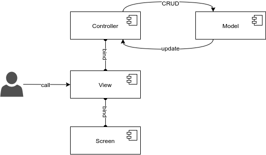

Terminology¶
This section aims to introduce terminology that is used in this library to make utilization of the library easier to understand in a very basic manner.
Model¶
Model, sometimes referred as business-logic, is the class which describes the overall logic and functionality that will be utilized in your application.
PrimitiveFXMVC currently only holds SerializableModel interface in which Serializable stands for extending java.io.Serializable and java.io.Externalizable for easier serialization of objects to the file system.
View¶
View is the blueprint of generic properties of any Screen.
Currently, this library only has GenericView abstract class which consists of properties as;
- Screen that the view is binded.
- Title of the window.
- Icon of the current stage.
- Width and Height of the current stage.
- Decoratedness of the current stage.
- Resizability of the current stage.
- The state of modality of the current stage relative to its parent window.
- Initial maximized property of current stage.
View is a POJO which describes all these properties. The library, currently, only consists of GenericView.
Screen¶
Screen is the layout of current Scene which is binded to a View. In other words, it is simply the FXML file.
Controller¶
Controller extends the functionality of classical Controller of JavaFX.
This library currently has GenericController which brings functionality to get Scene, Window and Stage from the controller.
Architecture¶
Architecture of PrimitiveFXMVC is as below:
